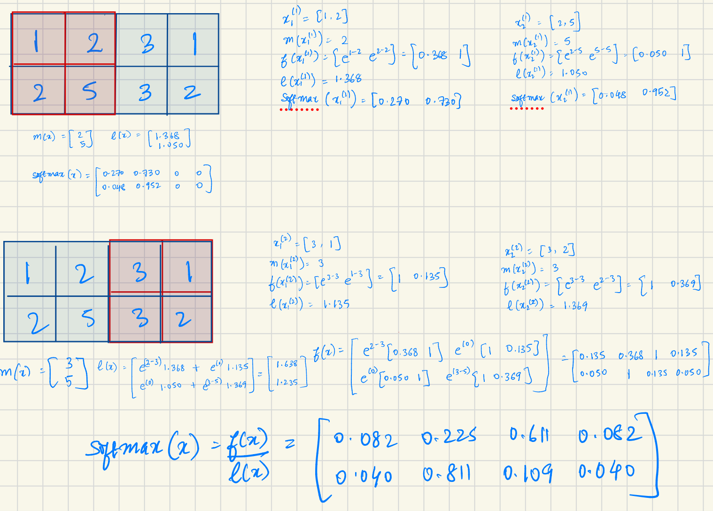

FlashAttention-1
In this 2022 paper, the authors ask if efficiency in computing exact attention can enable transformers parse larger sequences and help overcome runtime and memory challenges for long sequences.
They note that
- approximate attention techiques, a common approach to overcoming the quadratic time and space complexity of self-attention, tend to ignore overheads from memory access (IO speeds in GPUs).
- as shown in Ivanov et. al, most operations on modern GPUs are bottlenecked by the memory bandwidth and fall short of using the available compute efficiently.
Thus, the authors argue for using operations that account for the reads and writes to different levels of fast and slow memory, i.e. introduction of IO-awareness in algorithms, on modern accelerators (eg. SRAM vs High Bandwidth Memory in modern GPUs). With this, they focus on the attention computation to
- reduce the number of memory access by computing the exact softmax without multiple accesses to the whole input. This helps speed up the forward pass during training as well as inference.
- not store the large intermediate attention matrix for the backward pass. This speeds up the gradient computation during training.
The authors introduce the FlashAttention kernel that uses tiling to compute softmax over blocks of the input using a softmax reduction that enables both (1) the incremental calculation of the final softmax matrix without multiple global memory access, as well as (2) storage of block statistics instead of the large intermediate attention matrix for the gradient computation. This also allows for operation fusion allowing the calculation of output attention matrix in one kernel.
They further prove that FlashAttention requires \(O(N^2d^2M^{-1})\) HBM accesses where \(d\) is the head dimension and \(M\) is the size of SRAM, as compared to \(\Omega(Nd + N^2)\) of standard attention.
Standard Attention
Given input sequences \(\mathbf{Q}, \mathbf{K}, \mathbf{V} \in \mathbb{R}^{N \times d}\)
\[\begin{align} \mathbf{S} &= \mathbf{Q}\mathbf{K}^{T} &&\in \mathbb{R}^{N \times N} \\ \mathbf{P} &= \text{softmax}(\mathbf{S}) &&\in \mathbb{R}^{N \times N} \\ \mathbf{O} &= \mathbf{P}\mathbf{V} &&\in \mathbb{R}^{N \times d} \end{align}\]
where,
\(N\) is the sequence length
\(d\) is the head dimension
Often, \(N \gg d\) (e.g., for GPT2, \(N = 1024\) and \(d = 64\)).
The standard attention algorithm (given below) materializes the matrices \(S\) and \(P\) to the HBM which takes \(O(N^2)\) memory. As some or most of the operations are memory-bound, the large number of memory accesses translate to slow wall-clock time.
Standard Attention Algorithm
Require: Matrices \(\mathbf{Q},\mathbf{K},\mathbf{V} \in \mathbb{R}^{N \times d}\) in HBM.
- Load \(\mathbf{Q}, \mathbf{K}\) by blocks from HBM, compute \(\mathbf{S}\) and write it to HBM.
- Read \(\mathbf{S}\) from HBM, compute \(P\) and write it to HBM.
- Load \(\mathbf{P}, \mathbf{V}\) by blocks from HBM, compute \(\mathbf{O}\) and write to HBM.
- Return \(\mathbf{O}\).
FlashAttention
To achieve the goal of computing attention with significantly reduced HBM access, the authors use tiling and re-computation.
The main idea is that we split the inputs \(\mathbf{Q}, \mathbf{K}, \mathbf{V}\) into blocks, load them from slow HBM to fast SRAM, then compute the attention output with respect to those blocks. By scaling the output of each block by the right normalization factor before adding them up, we get the correct result at the end.
Tiling for attention outputs with respect to blocks
This is achieved by applying tiling to the online softmax reduction outlined by Milakov and Gimelshein.
For vector \(x^{(k)} \in \mathbb{R}^B\), \(B\) being the size of the block and \(k\) denoting that \(x^{(k)}\) \(k_{\text{th}}\) block of some vector \(x\) of size \(\gg B\)
\[\begin{align} m(x^{(k)}) & := \underset{i}{\text{max }} x^{(k)}_i \\ f(x^{(k)}) & := [e^{x^{(k)}_1 - m(x^{(k)})} ... e^{x^{(k)}_B - m(x^{(k)})}] \\ \ell(x^{(k)}) & := \underset{i}{\sum} f(x^{(k)})_i \end{align}\]
The block-wise calculations can be used to calculate the softmax of the full matrix using the normalization statistics \((m(x), l(x))\).
For vectors \(x^{(1)}, x^{(2)} \in \mathbb{R}^B\), the softmax of the concatenated \(x = [x^{(1)} x^{(2)}] \in \mathbb{R}^{2B}\) as:
\[\begin{align} m(x) &= m([x^{(1)} x^{(2)}])&& = \text{max}(m(x^{(1)}), m(x^{(2)})) \\ \ell(x) &= \ell([x^{(1)} x^{(2)}])&& = e^{m(x^{(1)}) - m(x)}\ell(x^{(1)}) e^{m(x^{(2)}) - m(x)}\ell(x^{(2)}) \end{align}\]
Using \(m(x)\) and \(\ell(x)\), \(f(x)\) and \(\text{softmax}(x)\) can be calculated as:
\[\begin{align} f(x) &= [e^{m(x^{(1)}) - m(x)}f(x^{(1)}) e^{m(x^{(2)}) - m(x)}f(x^{(2)})] \\ \text{softmax}(x) &= \frac{f(x)}{\ell(x)} \end{align}\]
The following is a small hand-worked example: 
Tiling enables the implementation of all computation steps in one kernel without multiple HBM access for reads and writes, i.e., it enables us to load input from HBM, perform computation (matrix multiply, softmax, optionally masking and dropout, matrix multiply), then write result back to HBM in one kernel.
Re-computation of S and P for backward pass
While the tiling trick enables speed-ups for inference, i.e. during the forward pass through the transformer, the backward pass typically relies on the intermediate matrices \(S,P \in \mathbb{R}^{N \times N}\) for the gradient computation with respect to \(\mathbf{Q}, \mathbf{K}, \mathbf{V}\).
To avoid storing the \(O(N^2)\) intermediate values for the backward pass, the authors instead store the softmax normalization statistics \((m, \ell)\) and re-compute \(\mathbf{S}, \mathbf{P}\) in the SRAM during the backward pass.
The authors are increasing FLOPs in order to re-compute \(\mathbf{S}\) and \(\mathbf{P}\) fully in the SRAM. To realize these gains, it is important that the SRAM is able accommodate all the required components for gradient calculation. There are implications that emerge from the IO complexity, which are discussed below.
FlashAttention Algorithm
The authors prove that this algorithm returns \(\mathbf{O} = \text{softmax}(\mathbf{Q}\mathbf{K}^T\mathbf{V})\) with \(𝑂(𝑁^2d)\) FLOPs and requires \(𝑂(𝑁)\) additional memory beyond inputs and output to store \(m\) and \(\ell\).
Require: Matrices \(\mathbf{Q}, \mathbf{K}, \mathbf{V} \in \mathbb{R}^{N \times d}\) in HBM, on-chip SRAM of size \(M\).
- Set block sizes \(B_c = \lceil \frac{M}{4d} \rceil\), \(B_r = \min(\lceil \frac{M}{4d} \rceil, d)\).
- Initialize \(\mathbf{O} = (0)_{N \times d} \in \mathbb{R}^{N \times d}\), \(\ell = (0)_{N} \in \mathbb{R}^{N}\), \({m} = (-\infty)_{N} \in \mathbb{R}^{N}\) in HBM.
- Divide \(\mathbf{Q}\) into \(T_r = \lceil \frac{N}{B_r} \rceil\) blocks \(\mathbf{Q}_1, \dots, \mathbf{Q}_{T_r}\), of size \(B_r \times d\) each, and divide \(\mathbf{K}, \mathbf{V}\) into \(T_c = \lceil \frac{N}{B_c} \rceil\) blocks \(\mathbf{K}_1, \dots, \mathbf{K}_{T_c}\) and \(\mathbf{V}_1, \dots, \mathbf{V}_{T_c}\), of size \(B_c \times d\) each.
- Divide \(\mathbf{O}\) into \(T_r\) blocks \(\mathbf{O}_1, \dots, \mathbf{O}_{T_r}\), of size \(B_r \times d\) each, divide \(\ell\) into \(T_r\) blocks \(\ell_1, \dots, \ell_{T_r}\), of size \(B_r\) each, divide \(m\) into \(T_r\) blocks \(m_1, \dots, m_{T_r}\), of size \(B_r\) each.
- for \(1 \le j \le T_c\) do
- \(\quad\) Load \(\mathbf{K}_j, \mathbf{V}_j\) from HBM to on-chip SRAM.
- \(\quad\) for \(1 \le i \le T_r\) do
- \(\qquad\) Load \(\mathbf{Q}_i, \mathbf{O}_i, \ell_i, m_i\) from HBM to on-chip SRAM.
- \(\qquad\) On chip, compute \(\mathbf{S}_{ij} = \mathbf{Q}_i \mathbf{K}_j^T \in \mathbb{R}^{B_r \times B_c}\).
- \(\qquad\) On chip, compute \(\tilde{m}_{ij} = \text{rowmax}(\mathbf{S}_{ij}) \in \mathbb{R}^{B_r}\), \(\mathbf{\tilde{P}}_{ij} = \exp(\mathbf{S}_{ij} - \tilde{m}_{ij}) \in \mathbb{R}^{B_r \times B_c}\) (pointwise), \(\mathbf{\tilde{\ell}}_{ij} = \text{rowsum}(\mathbf{\tilde{P}}_{ij}) \in \mathbb{R}^{B_r}\).
- \(\qquad\) On chip, compute \(m_i^{\text{new}} = \max(m_i, \tilde{m}_{ij}) \in \mathbb{R}^{B_r}\), \(\ell_i^{\text{new}} = e^{m_i - m_i^{\text{new}}} \ell_i + e^{\tilde{m}_{ij} - m_i^{\text{new}}} \mathbf{\tilde{\ell}}_{ij} \in \mathbb{R}^{B_r}\).
- \(\qquad\) Write \(\mathbf{O}_i \leftarrow \text{diag}(\ell_i^{\text{new}})^{-1} (\text{diag}(\ell_i) e^{m_i - m_i^{\text{new}}} \mathbf{O}_i + e^{\tilde{m}_{ij} - m_i^{\text{new}}} \mathbf{\tilde{P}}_{ij} \mathbf{V}_j)\) to HBM.
- \(\qquad\) Write \(\ell_i \leftarrow \ell_i^{\text{new}}\), \(m_i \leftarrow m_i^{\text{new}}\) to HBM.
- \(\quad\) end for
- end for
- Return \(\mathbf{O}\).
Implications of the IO Complexity
In the paper, the authors show the effect of the forward runtime of FlashAttention using the settings on an A100 GPU
- sequence length, \(N = 1024\)
- head dimensions, \(d = 64\)
- num_heads \(= 16\)
- batch_size \(= 64\)
From the graph, it is visible that:
- Increasing the block size decreases the HBM accesses.
- Fewer HBM accesses result in faster runtime, up to a point - this is most likely because at higher block sizes the bottlenecks shift from memory bandwidth (to arithmetic operations in the ideal case, or, in the worst case, resource constraints).
It is useful to consider the implications using commonly used GPUs.
| GPU | Arch | SMs | L1 size / SM | L2 size | Memory Bandwidth |
|---|---|---|---|---|---|
| T4 | Turing TU104 | 46 | 96KB | 4MB | 616 GB/sec |
| A10g | Ampere GA102 | 84 | 128KB | 6MB | 760 GB/sec |
| A100 | Ampere A100 | 108 | 164KB | 40MB | 1555 GB/sec |
| H100 | Hopper H100 | 114 | 228KB | 50MB | 2039 GB/sec |
While L1 as well as L2 are “on-chip”, SRAM is typically the L1 (shared memory). We use this size for deciding block sizes taking into consideration how blocks and SMs interact and how resource sharing affects occupancy. The L2 cache is not directly controllable by the programmer.
In the paper, the authors typically assume \(M\) or SRAM memory to be approximately 100KB.
Just by looking at these numbers, there a few things that we can expect about performance gains:
- During Inference: On a GPU like T4, even small models like llama3.2-3B that can fit within its VRAM will see only marginal gains at full sequence length (if any) because the block size will have to be very small. Any real improvements would need exploit additional characteristics like sparsity.
- During Training: On T4, there is likely no performance gain to be expected when dealing with realistic sequence lengths. The A10 might be only a slightly better budget candidate to T4 even at twice the cost per GPU, but any real training would need something like an A100 or H100.
- On the other hand, very small models / small models in small sequence settings, if run on GPUs like A/H100 using all of the available resource, might not be memory bound in which case
FlashAttentionmight add additional computation steps.
References
- Dao, Tri, Daniel Y. Fu, Stefano Ermon, Atri Rudra, and Christopher Ré. “FlashAttention: Fast and Memory-Efficient Exact Attention with IO-Awareness.” Preprint, submitted May 2022. arXiv:2205.14135. https://arxiv.org/abs/2205.14135.
- Ivanov, Andrei, Nikoli Dryden, Tal Ben-Nun, Shigang Li, and Torsten Hoefler. “Data Movement Is All You Need: A Case Study on Optimizing Transformers.” Preprint, submitted July 2020. arXiv:2007.00072. https://arxiv.org/abs/2007.00072.
- Modal, GPU Glossary
- Hwu, Wen-mei, and David Kirk. Programming Massively Parallel Processors: A Hands-on Approach. 4th ed. Waltham, MA: Morgan Kaufmann, 2023.
- Milakov, Maxim, and Natalia Gimelshein. “Online Normalizer Calculation for Softmax.” Preprint, submitted May 2018. arXiv:1805.02867. http://arxiv.org/abs/1805.02867.
- NVIDIA GPU white-papers (Turing T4, Ampere A10x, Ampere A100, Hopper H100)